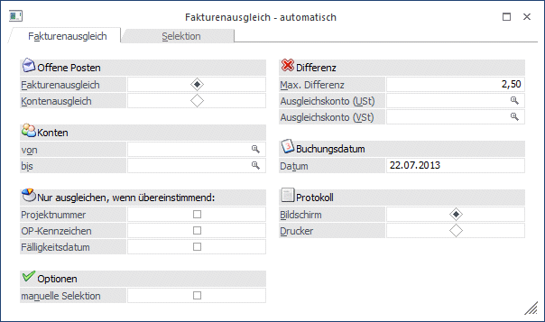
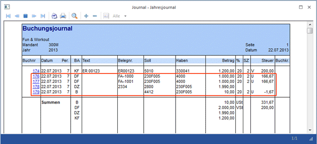
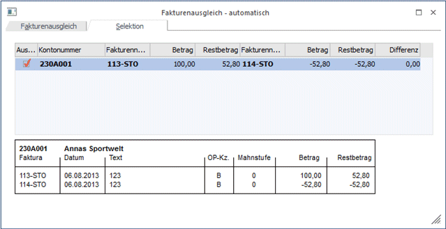

Im Menüpunkt…
1 WinLine FAKT
1 Buchen
1 Fakturenausgleich
1 automatisch
… können Fakturen und Gutschriften, die vom Betrag her gleich sind (z.B. Buchungen, die wieder storniert wurden) gegeneinander ausgeglichen werden (Rechnungen, die storniert wurden, und eine Gutschrift mit der Rechnungsnummer und einem Minus erstellt wurde, werden gegeneinander ausgeglichen, auch wenn es andere Belege mit gleichen Beträgen gibt), bzw. ein Ausgleich unter Berücksichtigung des Kontensaldos durchgeführt werden.

Fakturenausgleich
Wird der Radiobutton auf "Fakturenausgleich" gesetzt, so werden Fakturen und Gutschriften, die vom Betrag her gleich sind (z.B. Buchungen, die wieder storniert wurden) gegeneinander ausgeglichen (Rechnungen, die storniert wurden, und eine Gutschrift mit der Rechnungsnummer und einem Minus erstellt wurde, werden gegeneinander ausgeglichen, auch wenn es andere Belege mit gleichen Beträgen gibt).
Beispiel
Faktura über 1.000,--
Gutschrift über -1.000,--
werden beim Fakturenausgleich gegeneinander ausgeziffert.
Faktura über 1.000,--
Gutschrift über -500,--
Gutschrift über -500,--
werden NICHT gegeneinander ausgeziffert.
Kontenausgleich
Beim Kontenausgleich hingegen werden alle offenen Fakturen eines Kontos summiert. Ergibt die Summe des Kontos 0 (bzw. wird hier eine Eingabe einer "max. Differenz" berücksichtigt), so werden alle Fakturen des Kontos ausgeglichen.
Beispiel
Faktura über 1.000,--
Faktura über 1.000,--
Gutschrift über -500,--
Gutschrift über -500,--
Gutschrift über -600,--
Gutschrift über -400,--
ergeben einen Kontensaldo von "0" und werden daher beim Kontenausgleich gegeneinander ausgeglichen.
Ø Konten
Einschränkung des Fakturen/Kontenausgleichs auf bestimmte Personenkonten.
Ø Nur ausgleichen, wenn übereinstimmend:
ü Soll im Fakturenausgleich die Auszifferung unter bestimmten Kriterien stattfinden, so stehen die Felder
ü Projektnummer
ü OP-Kennzeichen
ü Fälligkeitsdatum
zur Verfügung. Wird eines oder mehrere Felder angehakt, so müssen diese Informationen in den OPs übereinstimmen, damit sie ausgeziffert werden.
Die Einstellung der Felder wird benutzerspezifisch gespeichert.
Ø Optionen / manuelle Selektion
Wird die Checkbox "manuelle Selektion" gesetzt, wird beim Drücken des OK-Buttons eine Tabelle geöffnet, in der Fakturen bzw. Konten nochmals bearbeitet, d.h. selektiert oder deselektiert werden können.
Die Erläuterung zum Register Selektion erfolgt im weiteren Verlauf.
Ø Max. Differenz
Durch Eingabe eines Differenzbetrages (absoluter Wert) kann festgelegt werden, dass nicht nur jene Fakturen gegeneinander ausgeziffert werden, die sich betragsmäßig genau ausgleichen, sondern auch jene, bei denen die Differenz innerhalb des angegebenen Differenzwertes liegt.
Bzw. das der Kontensaldo nicht nur 0 ist, sondern innerhalb des angegebenen Differenzbetrages (Schwellwert) liegt.
Beispiel 1 - Fakturenausgleich:
Max. Differenz = 10,--
Faktura über 1.000,--
Gutschrift über -990,--
werden beim Fakturenausgleich gegeneinander ausgeziffert.
Beispiel 2 - Kontenausgleich:
Max. Differenz = 10,--
Faktura über 1.000,--
Faktura über 1.000,--
Gutschrift über -1.990,--
Konto wird ausgeglichen, da die Differenz innerhalb des angegebenen Schwellbetrages liegt (10,--).
Ø Ausgleichskonto (USt) / Ausgleichskonto (VSt)
Wird ein "Differenzbetrag" im dafür vorgesehenen Eingabefeld angegeben, so müssen hier Ausgleichskonten für die Verbuchung der Differenzen angegeben werden.
Beispiel 3
Faktura über 1.000,--
Faktura über 1.000,--
Gutschrift über 1.990,--
Differenzbetrag über 10,--
Der Kontenausgleich wird durchgeführt (im Journal ersichtlich als erste Zeile "Fakturenausgleich") und der Differenzbetrag wird auf das jeweils angegebene Konto gebucht (Folgezeile "Fakturenausgleich" als B-Buchung: angegebenes Ausgleichskonto/Debitor).

Die angegeben Konten werden gespeichert, und bei nächster Verwendung wieder vorgeschlagen.
Für die Aufteilung der des Differenzbetrages auf die Steuerzeilen werden die Steuerbemessungen aus den OPs verwendet (Beim Fakturenausgleich die Bemessungen der positiven OPs; beim Kontenausgleich die Summe der Bemessungen der einzelnen OPs).
Ø Buchungsdatum
Angabe eines Datums, mit dem die Fakturen/Kontenausgleichsbuchung durchgeführt werden soll.
Ø Protokoll
Mittels "Protokoll"-Button in der Buttonleiste kann ein "Vorab"-Protokoll ausgegeben werden.
Durch Setzten des Radiobuttons kann entschieden werden, ob dieses auf den Bildschirm oder auf den Drucker ausgegeben wird.
Das Protokoll kann mit unterschiedlichen Selektionen beliebig oft ausgegeben werden.
Selektion - Fakturenausgleich
In der Tabelle wird in einer Zeile jene Fakturen, bzw. jene Gutschrift angezeigt, die gegeneinander ausgeziffert werden.
Im unteren Teil des Fensters wird dies in einer weiteren Info dargestellt.
Durch Aktivieren bzw. Deaktivieren der Checkbox "Auswahl" kann bestimmt werden, ob die Faktura mit der Gutschrift ausgeziffert werden soll oder nicht.

Selektion - Fakturenausgleich
In der Tabelle werden jene Konten inkl. Fakturen/Gutschriften/Vorauszahlungen angezeigt, die ausgeglichen werden.
Dabei kann selektiert werden, ob die für ein Konto geschehen soll oder nicht. Diese Auswahl kann natürlich dann nur pro Konto erfolgen.
Durch Drücken der F5-Taste wird der Fakturenausgleich/Kontenausgleich durchgeführt, wobei bei allen betroffenen Offenen Posten die Mahnstufe auf -1 gesetzt wird. Bedeutet in weiterer Folge, dass sie beim nächsten Reorg (siehe WinLine START-Handbuch, Kapitel Reorg) gelöscht werden können.
Gleichzeitig wird eine "Referenz-Journalzeile" mit dem Schlüssel DZ bzw. KZ sowie dem Buchungstext "Fakturenausgleich" erstellt, damit jederzeit später ersichtlich ist, wann welche Faktura mit welcher Gutschrift ausgeziffert worden ist.
Wurde beim Ausgleich auch eine Differenz berücksichtigt, und kam es beim Ausgleich zu eben dieser, so wird auch die entsprechende B-Buchung im Journal ersichtlich.
Hinweis 1
Diese "Referenz-Journalzeilen" stehen auch im Buchungsstorno zur Verfügung. Damit kann ein solcher Auszifferungs-Vorgang durch einfaches Stornieren der "Fakturenausgleichs-Journalzeile" zurückgesetzt werden. D.h. es werden Stornozeilen in den OP gebucht und die Fakturen wieder auf den Status "offen" gesetzt.
Hinweis 2
Da es sich bei diesen automatisch erstellten Fakturenausgleichsbuchungen um rein informative Buchungszeilen handelt (also einen dokumentativen Charakter haben), können diese Buchungszeilen im Journaldruck auf Wunsch auch ausgeblendet werden (siehe Punkt "Auswertungen/Journal).
Nach Durchführung des Fakturenausgleiches wird ein Fakturenausgleichs-Protokoll gedruckt, in dem alle ausgeglichenen Fakturen angedruckt werden.